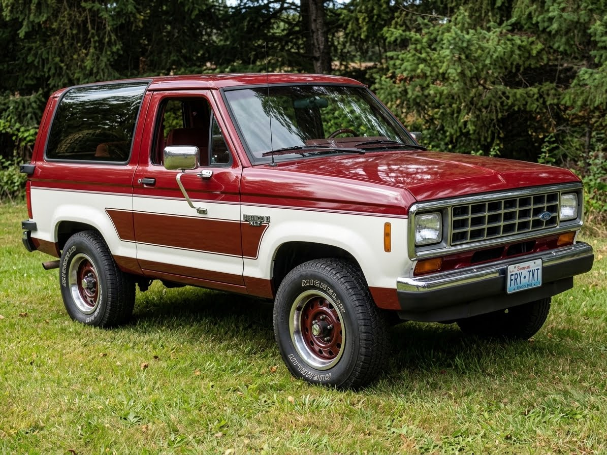

This was a 1988 Red Bronco ll, when I bought it from Marlo Motors in Perham, Mn. It was 2.9 V-6, 4 speed. The throw out bearing was noisy, so I bought it quite cheap :)
Keep in mind all of these needed restoration when I got them.
